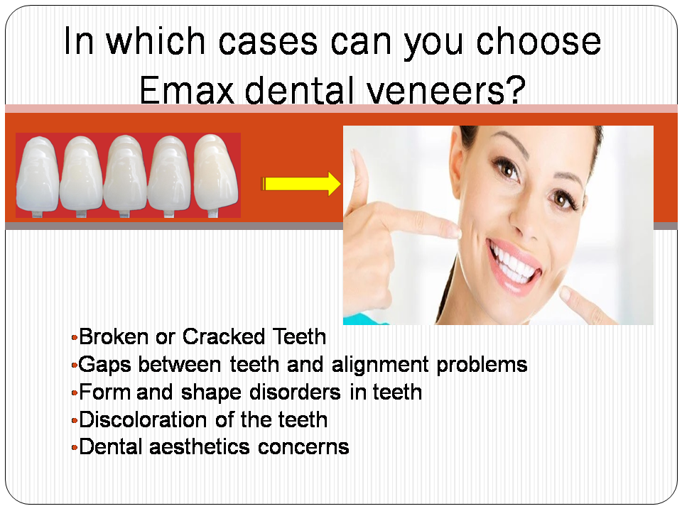

Varietatea fațetelor dentare crește odată cu cererea. Tehnologia stomatologiei estetice dezvoltă produse inovatoare pe baza preferințelor pacienților. Cei care își doresc un design perfect al zâmbetului urmăresc, de asemenea, ca procedurile efectuate pe dinții lor să fie atât unice, cât și durabile pentru mult timp.
Datorită celor mai noi posibilități tehnologice de astăzi, fațetele dentare au devenit considerabil mai subțiri. Prin urmare, aplicarea fațetelor dentare presupune o șlefuire mai redusă a dinților. Dacă doriți să profitați de această tehnologie și să obțineți un zâmbet mai frumos cu fațete Emax, mai jos veți găsi tot ce vă întrebați despre avantajele și dezavantajele lor.
Ce sunt fațetele Emax?
Fațetele Emax sunt fațete ceramice foarte subțiri, fără metal, aplicate pe suprafața din față a dinților, care oferă un design frumos al zâmbetului prin eliminarea unor probleme structurale minore și a nemulțumirilor estetice.
Din ce sunt făcute fațetele E-max?
Fațetele Emax sunt fațete dentare ultrasubțiri, durabile, realizate la comandă, dintr-un tip de vitroceramică ce conține litiu și silicat, cunoscută și sub numele de disilicat de litiu.
Care este diferența dintre fațetele Emax și alte fațete dentare?
Cea mai mare diferență dintre fațetele Emax și alte tipuri de fațete dentare (din porțelan, compozit și fațetele Lumineers) este că fațetele Emax sunt mai subțiri, mai rezistente și necesită o șlefuire mai redusă a dintelui. Alte avantaje sunt detaliate în paragrafele următoare.
În ce cazuri puteți alege fațetele dentare Emax?

Dacă aveți oricare dintre următoarele probleme, puteți scăpa de ele cu ajutorul fațetelor Emax.
Dinți rupți sau fisurați
Puteți folosi fațetele Emax pentru a repara dinții rupți, fisurați sau uzați. Astfel, scăpați de problemele dentare și obțineți, în același timp, un aspect estetic al dinților.
Spații între dinți și probleme de aliniere a dinților:
Fie că aveți spații între dinți, fie dinți nealiniați, fațetele dentare Emax vă pot ajuta. Datorită fațetelor Emax, veți scăpa de aceste probleme și veți avea un zâmbet perfect.
Tulburări de formă ale dinților:
Dacă aveți dinți nealiniați, diferențe de mărime sau alte deformări, puteți opta pentru fațetele dentare Emax pentru a corecta forma dinților. Astfel, veți rezolva problemele legate de estetica dentară.
Decolorarea dinților:
Dacă dinții sunt decolorați și pătați sau dacă nu devin suficient de albi prin albirea dentară, fațetele dentare Emax vor fi o alegere bună pentru dumneavoastră.
Nemulțumiri legate de estetica dentară:
Este posibil să vă doriți mai ales ca dinții frontali să aibă un aspect mai estetic. În acest caz, cea mai bună opțiune sunt fațetele dentare Emax.
Care sunt avantajele fațetelor E-max?
Vom defini avantajele fațetelor Emax în comparație cu alte tipuri de fațete dentare drept puncte forte, iar dezavantajele drept puncte slabe. Mai întâi, să vorbim despre avantaje, adică punctele forte.
Mai rezistente și mai durabile:
Fațetele Emax realizate din disilicat de litiu au o rezistență mai mare decât alte tipuri de fațete. Riscul de fisurare și fracturare este mai mic decât la alte fațete din porțelan. Sunt mai rezistente la forța de masticație. Le puteți folosi mult timp dacă respectați corect indicațiile.
Necesită mai puțină șlefuire a dinților:
Deoarece fațetele Emax sunt mai subțiri decât alte fațete, aplicarea lor necesită o șlefuire mai redusă a dinților. Întrucât este nevoie de o abraziune minimă a suprafeței dintelui, structura și țesutul natural al dinților sunt în mare parte păstrate. Acest lucru scurtează durata procedurii.
Rezistența la pete:
Fațetele Emax sunt foarte durabile și rezistente la petele și decolorările provocate de unele obiceiuri (precum cafeaua, ceaiul și fumatul). Cu fațetele Emax veți avea mereu un zâmbet strălucitor și alb.
Potrivite pentru multe probleme dentare:
Fațetele Emax oferă un avantaj semnificativ în rezolvarea diverselor probleme dentare. Am explicat mai sus în ce cazuri pot fi preferate fațetele Emax.
Design personalizat și aspect natural.
Fațetele Emax pot fi proiectate individual. Medicii dentiști și tehnicienii dentari țin cont de dorințele dumneavoastră și realizează un design asistat de calculator, potrivit tipului dumneavoastră de față. Dinții proiectați sunt prelucrați cu precizie cu o imprimantă 3D.
După ce noile fațete Emax sunt pregătite, se încep procedurile pe dinți. Apoi fațetele Emax sunt aplicate. Fațetele sunt unice pentru dumneavoastră și arată natural.
Dezavantajele fațetelor Emax
Deși fațetele Emax au multe avantaje, există și foarte puține dezavantaje, adică puncte slabe.
Sensibilitatea dinților, masticația și iritarea gingiilor:
După aplicarea fațetelor Emax, unele persoane pot avea o sensibilitate ușoară, temporară. Această sensibilitate dispare după una-două săptămâni, iar iritarea gingiilor este de obicei rară. Dacă fațetele Emax nu sunt aplicate sau cimentate bine, pot provoca iritarea gingiilor. În acest caz, medicul dentist va face ajustările necesare.
Ireversibilitatea:
Odată aplicate, fațetele Emax sunt ireversibile. Dacă decideți să vă îndepărtați fațetele Emax, rețineți că dinții vor trebui remodelați sau vor fi necesare proceduri suplimentare pentru aplicarea unor fațete noi.
Costul:
Fațetele Emax sunt în general mai scumpe decât alte tipuri de fațete. Totuși, costul va fi determinat de factori precum procedurile care vor fi efectuate (de exemplu, pregătirea dinților sau modelarea gingiilor), numărul de fațete necesare, experiența medicului dentist și locația clinicii stomatologice.
Cum se realizează fațetele E-max?
Când dumneavoastră și medicul decideți să realizați fațete Emax, se vor efectua următoarele proceduri.
Imagistica digitală:
Mai întâi, medicul dentist va realiza imagini digitale de înaltă rezoluție ale dinților și gingiilor cu un scanner intraoral. Dacă optați pentru fațetele Emax, medicul dentist va efectua procedurile ulterioare. Această etapă poate fi numită și amprentare digitală.
Designul:
Cu ajutorul unui software, designul fațetei care va fi aplicată pe dinți este realizat în funcție de tipul feței. Astfel se stabilesc forma și dimensiunile fațetei Emax, care va fi unică pentru dumneavoastră.
Producția fațetelor E-max:
O imprimantă 3D transpune designul pregătit în material din disilicat de litiu. Apoi se fac corecturile necesare în laborator sau în clinică.
Șlefuirea suprafețelor dinților:
Conform măsurătorilor din design, se face o ușoară șlefuire a suprafețelor din față ale dinților. Astfel, dinții sunt pregătiți pentru aplicarea fațetei Emax.
Fațetele provizorii.
Fațetele provizorii pot fi folosite pentru a vă proteja dinții până la realizarea fațetelor definitive.
Cimentarea:

Suprafețele dinților sunt curățate cu un acid special, iar fațetele Emax definitive sunt lipite pe dinți cu un adeziv special. Apoi lumina UV întărește adezivul.
Verificarea:
După fixarea fațetelor Emax, medicul dentist efectuează verificările finale pentru a se asigura de alinierea și armonia lor. Fațetele E-max sunt acum gata de utilizare. Le puteți folosi cu liniște sufletească.
Fațetele E-max: întrebări frecvente
Sunt fațetele E-max cel mai bun tip de fațete?
Răspunsul la această întrebare depinde de scopul pentru care vă doriți fațetele. Dacă doriți ca fațeta să fie subțire, rezistentă și durabilă, puteți alege fațetele Emax.
La ce trebuie să fiți atenți când purtați fațete Emax?
În primul rând, o igienă orală excelentă este esențială. Pentru a o menține, este necesar să vă spălați regulat pe dinți și să folosiți ața dentară. De asemenea, va trebui să fiți extrem de atenți când mestecați alimente tari. Este important și să mergeți la controale stomatologice de rutină.
Sunt fațetele Emax permanente?
Dacă le folosiți cu grijă, nu va fi nevoie să le înlocuiți mulți ani. Dar, în timp, și fațetele Emax se uzează și trebuie înlocuite.
Pot fi îndepărtate fațetele Emax?
Ocazional, fațetele Emax pot necesita întreținere și ajustări. Pentru aceasta, poate fi necesară și îndepărtarea lor. Totuși, nu vă puteți îndepărta singuri fațetele Emax. Doar medicul poate face acest lucru.
Voi simți durere când mi se aplică fațetele Emax?
Medicul dentist va efectua procedurile necesare pentru a vă asigura confortul pe toată durata acestei proceduri. Unii pacienți simt o durere foarte mică, în timp ce alții nu simt deloc durere.
Se folosesc fațetele E-max și drept coroane?
Da, Emax poate fi folosit atât pentru coroane, cât și pentru fațete.
Arată natural fațetele Emax?
Desigur. Da. Fațetele E-max sunt fațete care lasă lumina să treacă, sunt translucide și se potrivesc cu culoarea naturală a dinților. Cu aceste fațete veți avea un design al zâmbetului complet natural.
Care este durata maximă de utilizare a fațetelor Emax?
Le puteți folosi fără înlocuire până la 15 ani sau chiar mai mult, dacă le folosiți cu grijă și mergeți regulat la controale la medic.